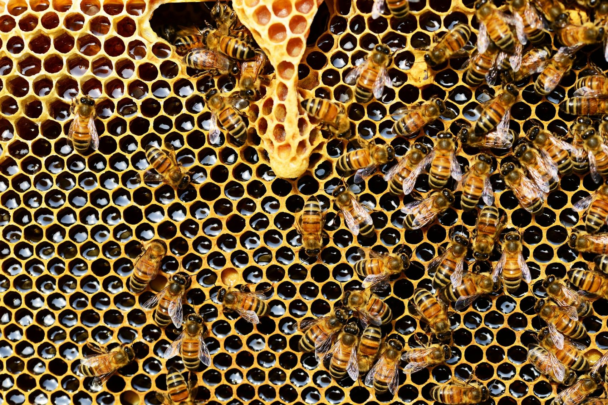

A espécie Apis mellifera, oriunda do Velho Mundo, é a mais conhecida entre as abelhas com ferrão. Desde os primórdios, ela vem sendo criada em larga escala para a produção de mel, cera e própolis
Aqui está a imagem da Apis mellifera:
Mel: é o néctar colhido das flores e levado para dentro da colônia, onde é desidratado e transformado em mel e armazenado dentro de potes.
Pólen:é o principal alimento para as abelhas adultas e suas larvas.Após coletado nas flores é transportado para a colônia nas corbículas das operárias.É estocado em potes e sofre alterações devido à fermentação.Dependendo da época do ano, podemos encontrar pólen armazenado, com diversas cores, dependendo da origem floral desse material.
Cera:é uma secreção das glândulas cerígenas.Os zangões também secretam cera.As pequenas placas de cera pura são postas em depósitos, geralmente sobre o invólucro ou em potes, sobre as quais as abelhas misturam própolis, para formar o cerume.O cerume é o material básico para a construção dos discos de cria, do invólucro e dos potes.
Própolis: a resina é o produto exsudado por muitas plantas, que é misturado com secreções glandulares formando o própolis.Nas abelhas sem ferrão, geralmente o própolis está associado à cera e barro para ser usado na construção geral, calafetação de fendas, imobilização de insetos invasores, defesa direta da colônia contra inimigos.
Conheça aqui as abelhas sem ferrão